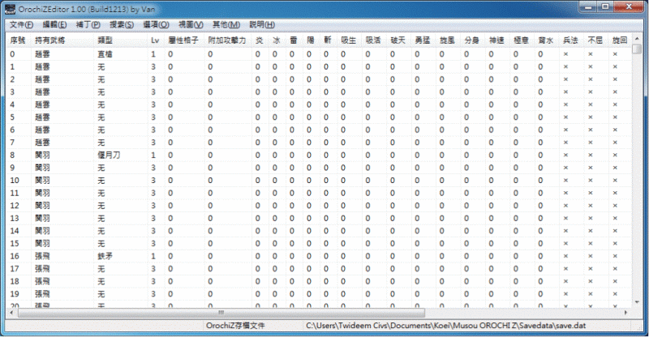
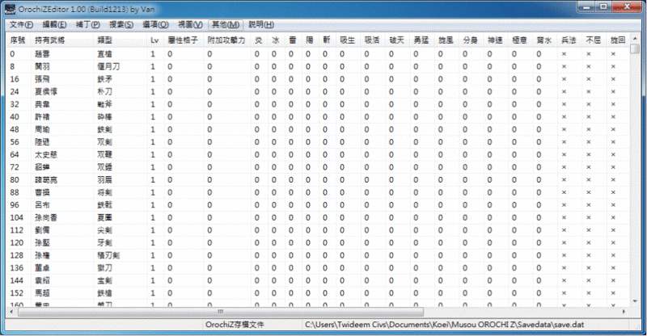
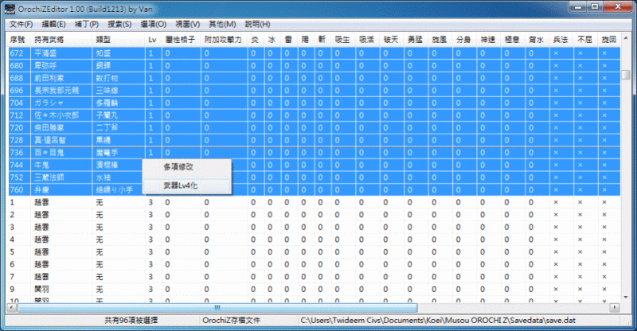
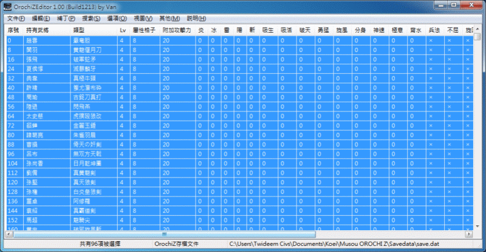

修改教學一：直接修改進行中的遊戲
１、點選功能表的「文件」→「Attach to OrochZ」讓修改器讀取進行中的遊戲的資料。（或按 F6 快鍵）
２、透過功能表的「編輯」，修改任何你想要的資料。
３、修改資料後，點選功能表的「文件」→「保存修改」，遊戲的資料才會改變。（或按 Ctrl+S 快鍵）
Ａ、如果還想繼續修改，請點選功能表的「文件」→「Rettach」讓修改器重新讀取進行中的遊戲的資料。（或按 F8 快鍵）
Ｂ、重複進行上面 2 跟 3 的操作步驟。
建議以這種方式修改資料，因為改得不滿意的話，只要別在遊戲中存檔，就可以重開遊戲來挽救。
修改教學二：從存檔修改資料
１、點選功能表的「文件」→「打開存檔 (自動)」，修改器就會自動讀取已存在的存檔紀錄。
２、透過功能表的「編輯」，修改任何你想要的資料。
３、修改完資料，點選功能表的「文件」→「保存修改」，遊戲的資料就會改變。（或按 Ctrl+S 快鍵）
以這種方式修改資料，若改得不滿意，只好手動改回來，挽救起來比較麻煩。
修改技巧：將所有角色初始武器改成 Lv4
善用「排序」的功能，可以在遊戲一開始，將所有角色的第一把武器，全部改成 Lv4 的武器，讓自己有好的開始，就是成功的一半……雖然不建議這麼玩，因為失去刷武的樂趣，不過刷 Lv4 武器確實很容易死，難度頗高，應該還是會有少數人希望一開始就以 Lv4 武器登場。
步驟 1
首先讓修改器讀取遊戲資料，然後點選功能表的「編輯」→「武將武器」。這時畫面如下：

步驟 2
注意表格，有個「欄位」的名稱是「Lv」，請用滑鼠左鍵在上面點兩下，修改器就會進行排序。排序完畫面如下，全部都是 Lv 1 的武器：

步驟 3
滑鼠將所有 Lv 欄位為 1 的資料選出來，然後按滑鼠右鍵叫出選單，再選擇「武器 Lv4 化」，如圖：

步驟 4
就這樣，所有 Lv 1 的武器通通變成 Lv 4 武器，而且「屬性格子」與「附加攻擊力」也已經衝到最大，如圖：

最後記得保存修改。
如果想保留「屬性格子」與「附加攻擊力」這些武器融合的樂趣，就用「多項修改」把 8 格改為 0 格，20 改為 0 吧！